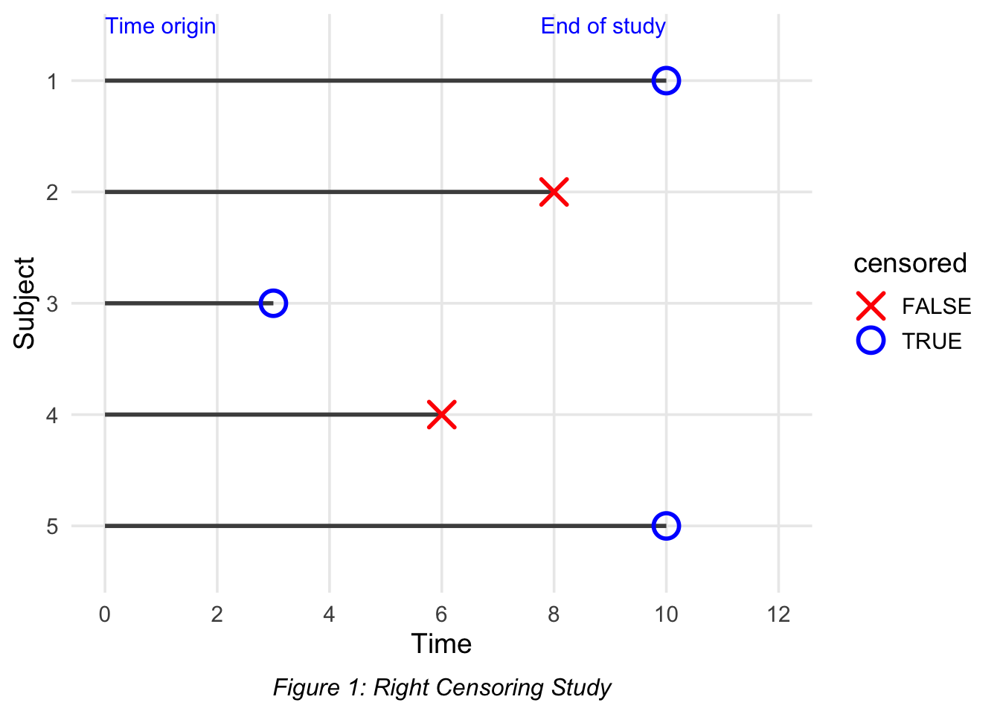

Survival Analysis P1
Survival Analysis
Censoring
Self-Study Notes for Survival Analysis
During Janurary to April of 2025, I attended the course Survival Analysis I at the Dalla Lana School of Public Health, University of Toronto, taught by Professors Olli Saarela and Kevin Thorpe.
In preparing for a career in biostatistics, I’ve come to appreciate just how crucial survival analysis is for making sense of time-to-event outcomes in clinical studies. To consolidate my learning and support others with similar interests, I’m compiling a series of posts summarizing key concepts and insights from the course—and extending beyond it.
With this goal in mind, my notes aim to compile key concepts in survival analysis while also gathering useful statistical packages and functions, accompanied by mathematical reasoning where appropriate.
Introduction
Survival analysis involves the analysis of time to event outcomes. As its name suggests, it is commonly used in studies involving time to death events, although the event could really be anything. Other common applications of survival analysis include time from release to re-offense among first-time juvenile offenders, time from graduation to securing a new job, and duration from marriage to divorce.
There are two main reasons (I can think of for now) why we need to develop a new set of methods for time to event analysis:
- Duration times are always positive, making many of the standard models which assumes normality inappropriate.
- Censoring is always an issue for many real world data sets. This will be discussed in details in the following section.
Censoring
Censoring occurs when we do not have complete information about a subject’s time to event \(T\). There are three types of censoring.
Right censoring occurs when \(T > t\), meaning the event has yet to occur as of time \(t\) and may not occur for the duration of the study. We don’t observe an exact time of event \(T\), but we know it is after the period of study. For example, a clinical trial where some patients do not experience a stroke. A possible explanation of this is that, the patient may withdrew from the study early on, or that they simply did not experience a stroke.
Left censoring occurs when \(T < t\), meaning the event occurred at some unknown time before time \(t\). For example, a patient was tested positive for HIV for their first visit, but we don’t know when they contracted it.
Interval censoring occurs when \(t_1 < T < t_2\), meaning the event occurred between times \(t_1\) and \(t_2\).For example, a patient is tested every 6 months. At month 12, the patient tested positive for some infection. Hence, the event occurred some time between months \(6\) and \(12\).
Censoring Mechanisms
There are three mechanisms that can generate censored data.
Type I censoring: The end of study time is specified in advance, regardless of whether the event has occurred and the remaining subjects is right censored. For example, a company runs tests for 100 light bulbs, keeping them on for 1000 hours. Any light bulb still working after 1000 hours are right censored.
Type II censoring: The experiment continues until a pre-specified number of events have occurred and the remaining subjects is right censored. For example, using the same scenario above, but the company decides to stop the experiment whenever the 50th light bulb fails.
Competing risks: A subject is removed from the risk set due to the occurrence of another event. For example, using the same scenario above, power shortage could interfere with the study resulting in all light bulbs to fail.
Non-informative vs. Informative assumptions
For the methods discussed, we will assume that the censoring is non-informative.
In short, the non-informative assumption means that the reason a subject is censored is unrelated to their risk of experiencing the event. For example, a patient drops out of the study after a treatment because they need to move to another country for reasons unrelated to their condition.
On the other hand, informative censoring happens when the reason for censoring is related to the subject’s risk of the event. In this case, the censorship itself carries information about the occurrence of the event. For example, a cancer patient drops out of a study due to their condition worsening.